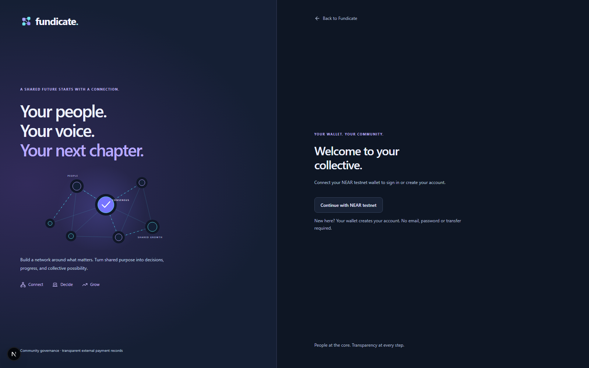

Separate the responsibilities.
Organize the syndicate.
Make the decisions.
Follow the agreed rules.
A proposed independent financial system.
Manage the community.
Keep exactly one admin.
Moderator status adds no voting power.
No email or password.

Who may submit schemes?
Which method counts the ballot?
Equal or contribution-based?
How is funding distributed?
Agree before participation begins.
State the amount.
Answer the community.
Explain why you want to join.
More than half approve.
Two thirds ≈ 66.7%.
Management roles do not replace member decisions.
A written description gives the score context.
Participation and conduct.
Clarity of the rules.
What happened, and why.
Feedback becomes part of the history.
Current local app: simulated accounting.
Everyone or staff only, as the agenda declares.
Screen first. Elect from the approved schemes.
First Past the Post
Preference order
Single Transferable Vote
The agenda chooses the election method.
Each method has its own published calculation rules.
A moderator’s title adds no weight.
Hidden while the election is open
Calculate and publish the result
Decision calculation is separate from payment execution.
≥90% of frozen eligible rejection power
Funds stay held until required periods finish.
Release to winning schemes.
Refund original contributors.
External attestations are independently unverified. A record is not proof of a Fundicate transfer.
Managers organize. Members decide.